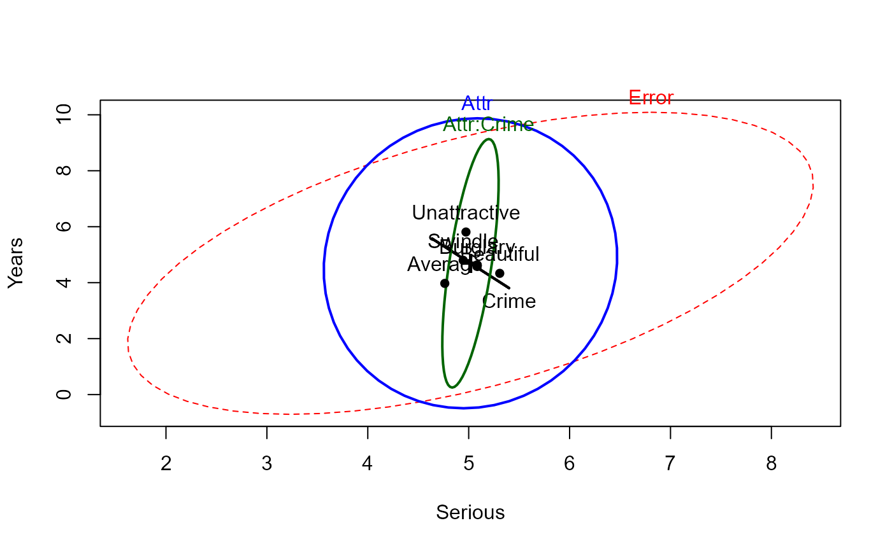

<!-- Generated by pkgdown: do not edit by hand -->
<!DOCTYPE html>
<html>
  <head>
  <meta charset="utf-8">
<meta http-equiv="X-UA-Compatible" content="IE=edge">
<meta name="viewport" content="width=device-width, initial-scale=1.0">

<title>Effects Of Physical Attractiveness Upon Mock Jury Decisions — MockJury • heplots</title>

<!-- jquery -->
<script src="https://code.jquery.com/jquery-3.1.0.min.js" integrity="sha384-nrOSfDHtoPMzJHjVTdCopGqIqeYETSXhZDFyniQ8ZHcVy08QesyHcnOUpMpqnmWq" crossorigin="anonymous"></script>
<!-- Bootstrap -->
<link href="https://maxcdn.bootstrapcdn.com/bootswatch/3.3.7/cerulean/bootstrap.min.css" rel="stylesheet" crossorigin="anonymous">

<script src="https://maxcdn.bootstrapcdn.com/bootstrap/3.3.7/js/bootstrap.min.js" integrity="sha384-Tc5IQib027qvyjSMfHjOMaLkfuWVxZxUPnCJA7l2mCWNIpG9mGCD8wGNIcPD7Txa" crossorigin="anonymous"></script>

<!-- Font Awesome icons -->
<link href="https://maxcdn.bootstrapcdn.com/font-awesome/4.6.3/css/font-awesome.min.css" rel="stylesheet" integrity="sha384-T8Gy5hrqNKT+hzMclPo118YTQO6cYprQmhrYwIiQ/3axmI1hQomh7Ud2hPOy8SP1" crossorigin="anonymous">


<!-- pkgdown -->
<link href="../pkgdown.css" rel="stylesheet">
<script src="../jquery.sticky-kit.min.js"></script>
<script src="../pkgdown.js"></script>
  
  
<!-- mathjax -->
<script src='https://mathjax.rstudio.com/latest/MathJax.js?config=TeX-AMS-MML_HTMLorMML'></script>

<!--[if lt IE 9]>
<script src="https://oss.maxcdn.com/html5shiv/3.7.3/html5shiv.min.js"></script>
<script src="https://oss.maxcdn.com/respond/1.4.2/respond.min.js"></script>
<![endif]-->


  </head>

  <body>
    <div class="container template-reference-topic">
      <header>
      <div class="navbar navbar-default navbar-fixed-top" role="navigation">
  <div class="container">
    <div class="navbar-header">
      <button type="button" class="navbar-toggle collapsed" data-toggle="collapse" data-target="#navbar">
        <span class="icon-bar"></span>
        <span class="icon-bar"></span>
        <span class="icon-bar"></span>
      </button>
      <a class="navbar-brand" href="../index.html">heplots</a>
    </div>
    <div id="navbar" class="navbar-collapse collapse">
      <ul class="nav navbar-nav">
        <li>
  <a href="../index.html">
    <span class="fa fa-home fa-lg"></span>
     
  </a>
</li>
<li>
  <a href="../reference/index.html">Reference</a>
</li>
      </ul>
      
      <ul class="nav navbar-nav navbar-right">
        
      </ul>
    </div><!--/.nav-collapse -->
  </div><!--/.container -->
</div><!--/.navbar -->

      
      </header>

      <div class="row">
  <div class="col-md-9 contents">
    <div class="page-header">
    <h1>Effects Of Physical Attractiveness Upon Mock Jury Decisions</h1>
    </div>

    
    <p>Male participants were shown a picture of one of three young women.  Pilot  work
had indicated  that the  one woman  was beautiful,  another of  average physical
attractiveness, and the third  unattractive.  Participants rated the  woman they
saw on each  of twelve attributes.  These measures were used to check on the
manipulation by the photo.</p>
<p>Then the participants were told that the person in the photo had committed a
Crime, and asked to rate the seriousness of the crime and recommend a
prison sentence, in Years.</p>
<p>Does attractiveness of the "defendent" influence the sentence or perceived
seriousness of the crime?  Does attractiveness interact with the nature of the
crime?</p>
    

    <pre class="usage"><span class='fu'>data</span>(<span class='no'>MockJury</span>)</pre>
        
    <h2 class="hasAnchor" id="format"><a class="anchor" href="#format"></a>Format</h2>

    <p>A data frame with 114 observations on the following 17 variables.</p><dl class='dl-horizontal'>
    <dt><code>Attr</code></dt><dd><p>Attractiveness of the photo, a factor with levels <code>Beautiful</code> <code>Average</code> <code>Unattractive</code></p></dd>
    <dt><code>Crime</code></dt><dd><p>Type of crime, a factor with levels <code>Burglary</code> (theft of items from victim's room)
    	 <code>Swindle</code> (conned a male victim)</p></dd>
    <dt><code>Years</code></dt><dd><p>length  of sentence given the defendant by the  mock juror subject</p></dd>
    <dt><code>Serious</code></dt><dd><p>a  rating of  how  serious  the  subject  thought the defendant's  crime  was</p></dd>
    <dt><code>exciting</code></dt><dd><p>rating of the photo for 'exciting'</p></dd>
    <dt><code>calm</code></dt><dd><p>rating of the photo for 'calm'</p></dd>
    <dt><code>independent</code></dt><dd><p>rating of the photo for 'independent'</p></dd>
    <dt><code>sincere</code></dt><dd><p>rating of the photo for 'sincere'</p></dd>
    <dt><code>warm</code></dt><dd><p>rating of the photo for 'warm'</p></dd>
    <dt><code>phyattr</code></dt><dd><p>rating of the photo for 'physical attractiveness'</p></dd>
    <dt><code>sociable</code></dt><dd><p>rating of the photo for 'exciting'</p></dd>
    <dt><code>kind</code></dt><dd><p>rating of the photo for 'kind'</p></dd>
    <dt><code>intelligent</code></dt><dd><p>rating of the photo for 'intelligent'</p></dd>
    <dt><code>strong</code></dt><dd><p>rating of the photo for 'strong'</p></dd>
    <dt><code>sophisticated</code></dt><dd><p>rating of the photo for 'sophistocated'</p></dd>
    <dt><code>happy</code></dt><dd><p>rating of the photo for 'happy'</p></dd>
    <dt><code>ownPA</code></dt><dd><p>self-rating of the subject for 'physical attractiveness'</p></dd>
  </dl>
    
    <h2 class="hasAnchor" id="source"><a class="anchor" href="#source"></a>Source</h2>

    <p>From Dr. Wuensch's StatData Page,
http://core.ecu.edu/psyc/wuenschk/StatData/PLASTER.dat</p>
    
    <h2 class="hasAnchor" id="references"><a class="anchor" href="#references"></a>References</h2>

    <p>Data from the thesis by Plaster, M. E. (1989).
<em>Inmates as mock jurors: The effects of physical attractiveness upon juridic decisions.</em>
M.A. thesis,
Greenville, NC: East Carolina University.
    <!-- %%  ~~ possibly secondary sources and usages ~~ --></p>
    

    <h2 class="hasAnchor" id="examples"><a class="anchor" href="#examples"></a>Examples</h2>
    <pre class="examples"><div class='input'><span class='co'># manipulation check:  test ratings of the photos classified by Attractiveness</span>
<span class='no'>jury.mod1</span> <span class='kw'>&lt;-</span> <span class='fu'>lm</span>( <span class='fu'>cbind</span>(<span class='no'>phyattr</span>, <span class='no'>happy</span>, <span class='no'>independent</span>, <span class='no'>sophisticated</span>) ~ <span class='no'>Attr</span>, <span class='kw'>data</span><span class='kw'>=</span><span class='no'>MockJury</span>)
<span class='fu'>Anova</span>(<span class='no'>jury.mod1</span>, <span class='kw'>test</span><span class='kw'>=</span><span class='st'>"Roy"</span>)</div><div class='output co'>#&gt; 
#&gt; Type II MANOVA Tests: Roy test statistic
#&gt;      Df test stat approx F num Df den Df    Pr(&gt;F)    
#&gt; Attr  2    1.7672   48.156      4    109 &lt; 2.2e-16 ***
#&gt; ---
#&gt; Signif. codes:  0 <U+0091>***<U+0092> 0.001 <U+0091>**<U+0092> 0.01 <U+0091>*<U+0092> 0.05 <U+0091>.<U+0092> 0.1 <U+0091> <U+0092> 1</div><div class='input'><span class='co'>## </span>
<span class='co'>## Type II MANOVA Tests: Roy test statistic</span>
<span class='co'>##      Df test stat approx F num Df den Df    Pr(&gt;F)    </span>
<span class='co'>## Attr  2    1.7672   48.156      4    109 &lt; 2.2e-16 ***</span>
<span class='co'>## ---</span>
<span class='co'>## Signif. codes:  0 '***' 0.001 '**' 0.01 '*' 0.05 '.' 0.1 ' ' 1 </span>

<span class='fu'><a href='heplot.html'>heplot</a></span>(<span class='no'>jury.mod1</span>, <span class='kw'>main</span><span class='kw'>=</span><span class='st'>"HE plot for manipulation check"</span>)</div><div class='img'></div><div class='input'><span class='fu'>pairs</span>(<span class='no'>jury.mod1</span>)</div><div class='img'></div><div class='input'>
<span class='kw'>if</span> (<span class='fu'>require</span>(<span class='no'>candisc</span>)) {
        <span class='no'>jury.can</span> <span class='kw'>&lt;-</span> <span class='fu'><a href='http://www.rdocumentation.org/packages/candisc/topics/candisc'>candisc</a></span>(<span class='no'>jury.mod1</span>)
        <span class='no'>jury.can</span>
        <span class='fu'><a href='heplot.html'>heplot</a></span>(<span class='no'>jury.can</span>, <span class='kw'>main</span><span class='kw'>=</span><span class='st'>"Canonical HE plot"</span>)
}</div><div class='output co'>#&gt; <span class='message'>Loading required package: candisc</span></div><div class='input'>
<span class='co'># influence of Attr of photo and nature of crime on Serious and Years</span>
<span class='no'>jury.mod2</span> <span class='kw'>&lt;-</span> <span class='fu'>lm</span>( <span class='fu'>cbind</span>(<span class='no'>Serious</span>, <span class='no'>Years</span>) ~ <span class='no'>Attr</span> * <span class='no'>Crime</span>, <span class='kw'>data</span><span class='kw'>=</span><span class='no'>MockJury</span>)
<span class='fu'>Anova</span>(<span class='no'>jury.mod2</span>, <span class='kw'>test</span><span class='kw'>=</span><span class='st'>"Roy"</span>)</div><div class='output co'>#&gt; 
#&gt; Type II MANOVA Tests: Roy test statistic
#&gt;            Df test stat approx F num Df den Df  Pr(&gt;F)  
#&gt; Attr        2  0.075607   4.0828      2    108 0.01953 *
#&gt; Crime       1  0.004697   0.2513      2    107 0.77824  
#&gt; Attr:Crime  2  0.050104   2.7056      2    108 0.07136 .
#&gt; ---
#&gt; Signif. codes:  0 <U+0091>***<U+0092> 0.001 <U+0091>**<U+0092> 0.01 <U+0091>*<U+0092> 0.05 <U+0091>.<U+0092> 0.1 <U+0091> <U+0092> 1</div><div class='input'><span class='fu'><a href='heplot.html'>heplot</a></span>(<span class='no'>jury.mod2</span>)</div><div class='img'></div><div class='input'>
<span class='co'># stepdown test (ANCOVA), controlling for Serious</span>
<span class='no'>jury.mod3</span> <span class='kw'>&lt;-</span> <span class='fu'>lm</span>( <span class='no'>Years</span> ~ <span class='no'>Serious</span> + <span class='no'>Attr</span> * <span class='no'>Crime</span>, <span class='kw'>data</span><span class='kw'>=</span><span class='no'>MockJury</span>)
<span class='fu'>Anova</span>(<span class='no'>jury.mod3</span>)</div><div class='output co'>#&gt; Anova Table (Type II tests)
#&gt; 
#&gt; Response: Years
#&gt;            Sum Sq  Df F value    Pr(&gt;F)    
#&gt; Serious    379.49   1 41.1423 3.938e-09 ***
#&gt; Attr        74.22   2  4.0230   0.02067 *  
#&gt; Crime        3.92   1  0.4255   0.51563    
#&gt; Attr:Crime  49.30   2  2.6723   0.07370 .  
#&gt; Residuals  986.95 107                      
#&gt; ---
#&gt; Signif. codes:  0 <U+0091>***<U+0092> 0.001 <U+0091>**<U+0092> 0.01 <U+0091>*<U+0092> 0.05 <U+0091>.<U+0092> 0.1 <U+0091> <U+0092> 1</div><div class='input'>
<span class='co'># need to consider heterogeneous slopes?</span>
<span class='no'>jury.mod4</span> <span class='kw'>&lt;-</span> <span class='fu'>lm</span>( <span class='no'>Years</span> ~ <span class='no'>Serious</span> * <span class='no'>Attr</span> * <span class='no'>Crime</span>, <span class='kw'>data</span><span class='kw'>=</span><span class='no'>MockJury</span>)
<span class='fu'>anova</span>(<span class='no'>jury.mod3</span>, <span class='no'>jury.mod4</span>)</div><div class='output co'>#&gt; Analysis of Variance Table
#&gt; 
#&gt; Model 1: Years ~ Serious + Attr * Crime
#&gt; Model 2: Years ~ Serious * Attr * Crime
#&gt;   Res.Df    RSS Df Sum of Sq      F  Pr(&gt;F)  
#&gt; 1    107 986.95                              
#&gt; 2    102 901.38  5    85.565 1.9365 0.09468 .
#&gt; ---
#&gt; Signif. codes:  0 <U+0091>***<U+0092> 0.001 <U+0091>**<U+0092> 0.01 <U+0091>*<U+0092> 0.05 <U+0091>.<U+0092> 0.1 <U+0091> <U+0092> 1</div><div class='input'>
</div></pre>
  </div>
  <div class="col-md-3 hidden-xs hidden-sm" id="sidebar">
    <h2>Contents</h2>
    <ul class="nav nav-pills nav-stacked">
      
      <li><a href="#format">Format</a></li>

      <li><a href="#source">Source</a></li>

      <li><a href="#references">References</a></li>
      
      <li><a href="#examples">Examples</a></li>
    </ul>

  </div>
</div>

      <footer>
      <div class="copyright">
  <p>Developed by John Fox, Michael Friendly.</p>
</div>

<div class="pkgdown">
  <p>Site built with <a href="http://hadley.github.io/pkgdown/">pkgdown</a>.</p>
</div>

      </footer>
   </div>

  </body>
</html>
